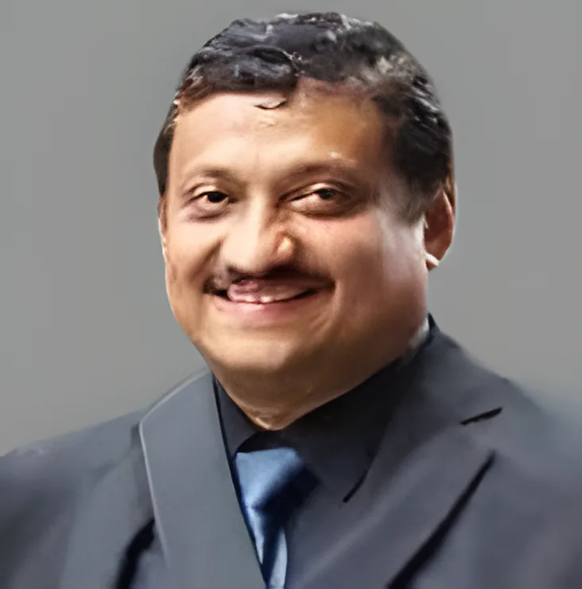

Braces and orthodontics
Orthodontic treatment moves crooked or crowded teeth into place and corrects how the jaws meet. We use fixed appliances, the braces glued to the teeth, and functional appliances, which guide the growth of the jaws in children.
- Fixed appliances (braces)
- Functional appliances

Dr. Sasil PoonnenOrthodontist, B.D.S, M.D.S